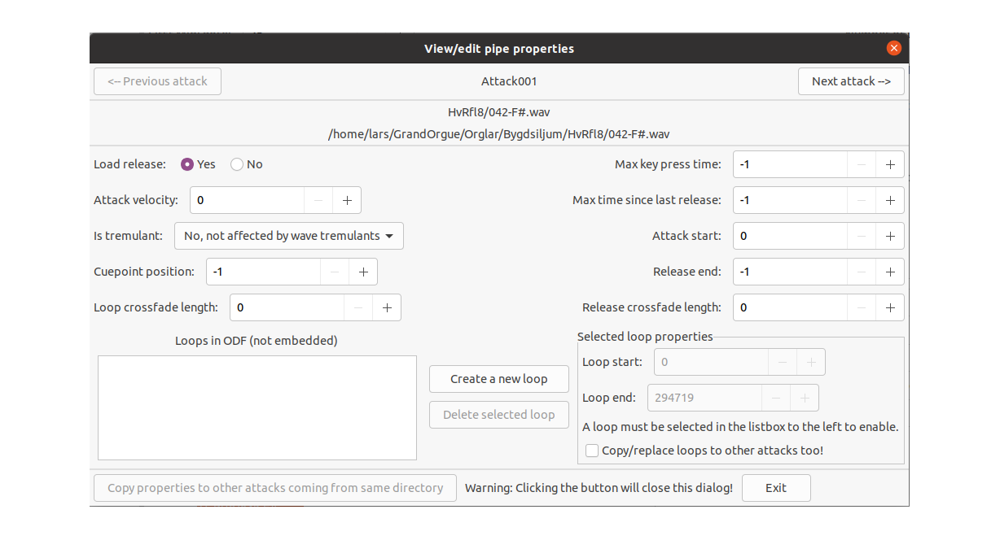

Pipes are found subsidiary to ranks or stops that load them. For more information on loading pipes see working with samples.
Editing of pipes is done by right clicking an element in the expanded pipe tree. For example if you right click on Pipe001, you get a pop up window with the following options;
Add new release from: pops up a window showing your directories so you can select a new (individual) release sample (shortcut Ctrl+R)
to let you borrow one or more pipes from another stop’s internal ranks (shortcut Ctrl+B)
The above mentioned pop up menu options can also be directly accessed by using keyboard shortcuts when a pipe in the tree is selected.
Most of the parameters are discussed under Rank. However there are a few new ones:
MIDI pitch Fraction Overrides the number specified in the wav file if this is not set to -1
If you right click on an attack sample you get the choice of editing the attack sample properties or deleting the attack. If you choose edit the following window pops up:

Similarly when you right click on a release and choose edit, you get the following similar window.

Following the editing make sure you exit the edited box before hitting the Exit button. If you make a change the ‘Copy properties to other attacks(or releases)from the same directory’ becomes active, so you can apply the changes to all the similar attacks or releases in the pipe tree.
The following parameters are defined:
Max key press time (int -1 - 100000, default: -1) Up to this time value in ms, the release sample is chosen. -1 means infinite. This is included in the attack sample editing to control the key press time for the release contained in the attack sample.
Attack Velocity The maximum velocity value in the note on message driving the key on the manual to which this pipe is referenced to use this attack sample.
Max time since last release (int -1 - 100000, default: -1) maximum time since the last release of the key to be able to use that attack. -1 means infinite.
(If Attack Velocity=0 and Max time since last release is set to -1 the attack sample to use will be chosen randomly.)
Attack velocity (int 0 - 127, default: 0) minimum velocity to use this attack sample. (multiple attack samples can be specified and chosen based on the velocity byte of the midi note on message sent from hardware.)
Is Tremulant: Choice of three settings:
this only applies to wave tremulants, not synth tremulants for the windchest on which this pipe is mounted
Cuepoint position and Release end and Attack Start (int -1 - 158760000, default: -1) Allows to override the Start sample of the release, the end sample of the release, and the start of the attack. -1 means use from the wave file.
Loop crossfade length (int 0 - 3000, default: 0) Crossfade length in ms between loop start and loop end. A crossfade requires enough samples before the start of the loop.
Release crossfade length (int 0 - 3000, default: 0) Crossfade length in ms between loop and the release (or other attacks). 0 means automatic selection/calculation.
You can also create your own loops in the attack samples – see GrandOrgue help for more information.